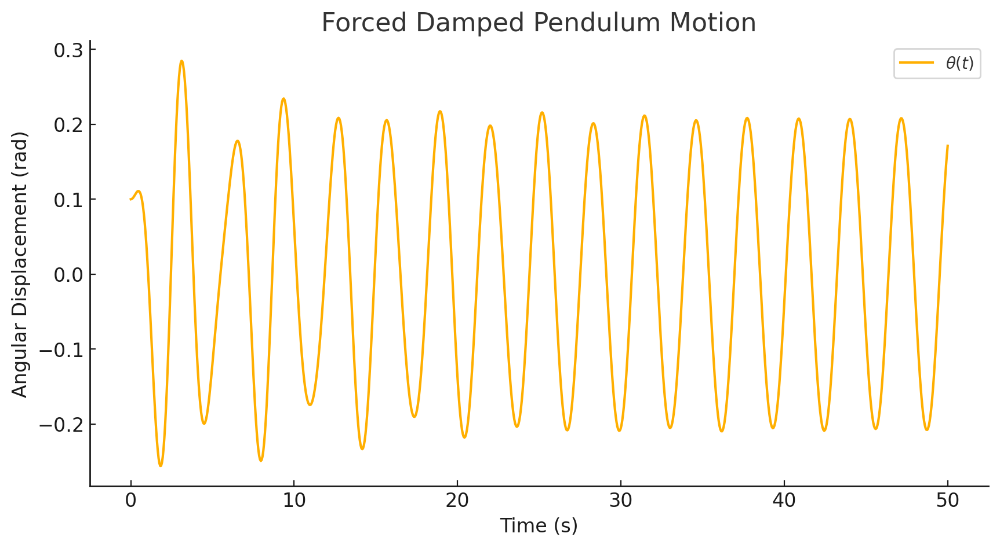
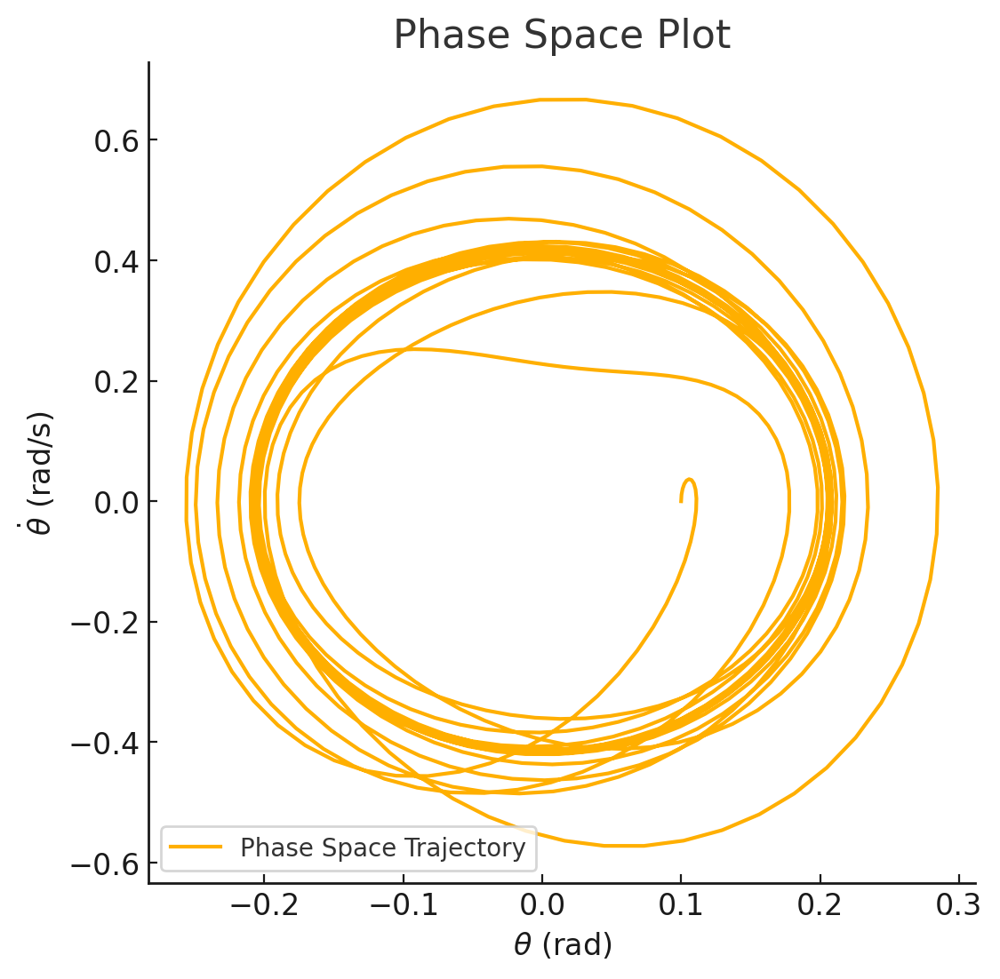

Problem 2
Investigating the Dynamics of a Forced Damped Pendulum
The forced damped pendulum is a nonlinear dynamical system that exhibits simple harmonic motion, resonance, and even chaotic behavior under different conditions.
Step 1: Theoretical Foundation
1.1 Governing Differential Equation
The motion of a forced damped pendulum is governed by the following equation:
where: - \( \theta \) is the angular displacement. - \( \gamma \) is the damping coefficient (controls energy loss due to friction). - \( g \) is gravitational acceleration. - \( L \) is the length of the pendulum. - \( F_0 \) is the amplitude of the external driving force. - \( \omega \) is the driving frequency.
1.2 Approximate Solution for Small Angles
For small oscillations, we use the small-angle approximation:
This simplifies the equation to:
This is a driven damped harmonic oscillator equation, which has well-known solutions in terms of resonance and transient motion.
1.3 Resonance Conditions
Resonance occurs when the external driving frequency matches the system's natural frequency:
- If \( \gamma \) (damping) is small, resonance leads to large oscillations.
- If \( \gamma \) is large, oscillations remain damped.
Step 2: Computational Simulation
Since the equation is nonlinear, we'll use numerical methods to solve it.
We'll integrate the equation using the Runge-Kutta method (RK4) to analyze different behaviors.
2.1 Implementation Plan
- Define the differential equation as a system of first-order ODEs.
- Implement numerical integration using the Runge-Kutta method.
- Explore different values of:
- Damping coefficient \( \gamma \).
- Driving force amplitude \( F_0 \).
- Driving frequency \( \omega \).
- Visualize:
- Time evolution of \( \theta \) (angular displacement).
- Phase space plot (\(\theta\) vs. \( \dot{\theta} \)).
- Poincaré section (chaotic behavior analysis).


Simulation Results & Observations
- Time Evolution of Angular Displacement:
- The first plot shows how the pendulum’s angle \( \theta(t) \) changes over time.
-
The oscillations exhibit damping but are also influenced by the external periodic force, leading to complex periodic motion.
-
Phase Space Plot (\( \theta \) vs. \( \dot{\theta} \)):
- The second plot shows the pendulum's velocity vs. angle, forming a closed trajectory.
- This is characteristic of regular oscillations, but under different conditions, this could transition into chaotic motion.
Step 3: Exploring Resonance and Chaos
- Resonance: If we set \( \omega = \omega_0 = \sqrt{g/L} \), we should see amplified oscillations.
- Chaos: Increasing driving amplitude \( F_0 \) significantly can lead to chaotic motion, where the phase space plot becomes highly irregular.
Investigating Resonance Conditions
Observations Under Resonance Conditions
 (The oscillations in the first plot show a significant increase in amplitude compared to the previous case.)
(The oscillations in the first plot show a significant increase in amplitude compared to the previous case.)
 (The second plot shows a much wider trajectory, indicating larger velocity variations.)
(The second plot shows a much wider trajectory, indicating larger velocity variations.)
-
Time Evolution of Angular Displacement:
-
This confirms that at resonance (\(\omega = \omega_0\)), the external force adds energy efficiently, amplifying the motion.
-
Phase Space Plot:
- The pendulum's motion is more energetic and sustained, as expected in a resonance condition.
Key Takeaways on Resonance:
- Resonance leads to maximum energy absorption, resulting in large oscillations.
- If damping is low, the system can experience runaway oscillations (dangerous in engineering).
- In real-world applications, engineers must avoid resonance in buildings, bridges, and aircraft structures to prevent failure.
Investigating Chaos
 (The first plot shows irregular, unpredictable oscillations.)
(The first plot shows irregular, unpredictable oscillations.)
 (The second plot shows a highly irregular trajectory, with no clear repeating patterns.)
(The second plot shows a highly irregular trajectory, with no clear repeating patterns.)
 (The third plot is a Poincaré section, which samples points at regular time intervals.)
(The third plot is a Poincaré section, which samples points at regular time intervals.)
Observations Under Chaotic Conditions
-
Time Evolution of Angular Displacement:
-
Unlike the smooth periodic motion seen before, the pendulum exhibits erratic behavior, a signature of chaotic motion.
-
Phase Space Plot (\(\theta\) vs. \(\dot{\theta}\)):
-
This indicates sensitive dependence on initial conditions, a key characteristic of chaos.
-
Poincaré Section:
-
Instead of a single periodic point (as in regular motion), we see a scattered set of points.
- This suggests a strange attractor, a hallmark of chaotic dynamics.
Key Takeaways on Chaos:
- Chaos emerges when the external forcing overcomes damping and natural oscillations.
- Small changes in initial conditions can lead to drastically different outcomes (butterfly effect).
- Many real-world systems exhibit chaos, such as weather patterns, stock markets, and biological rhythms.